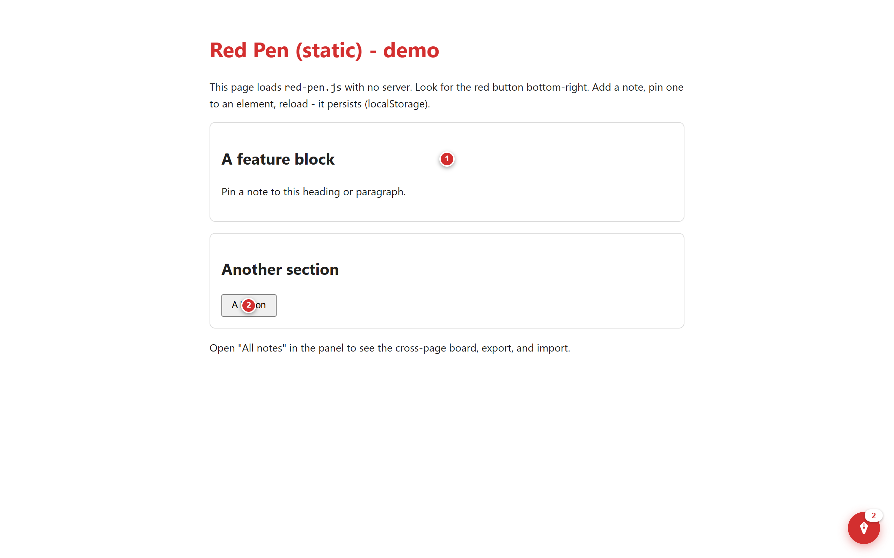
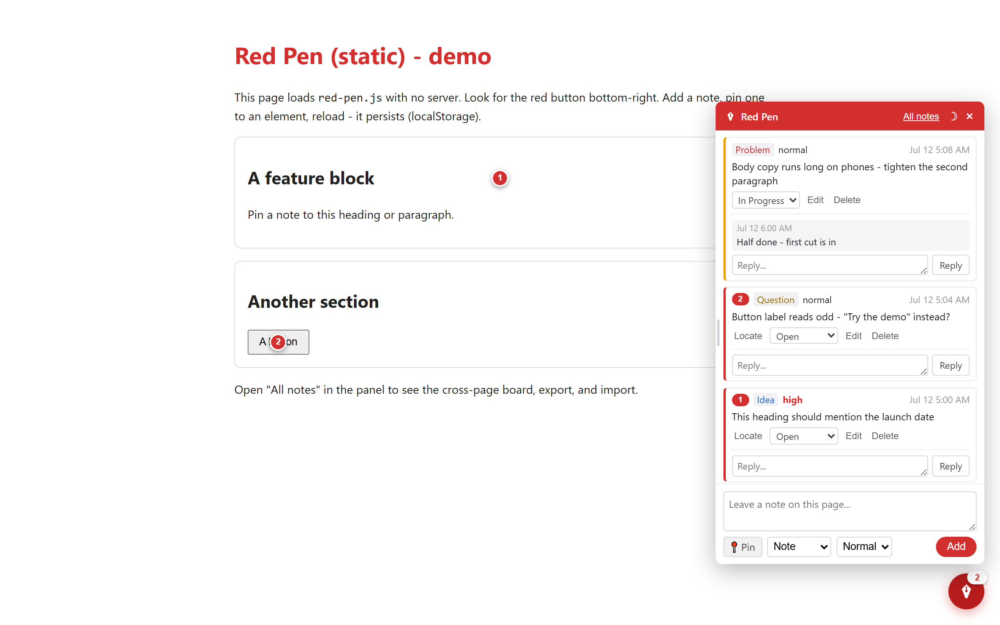
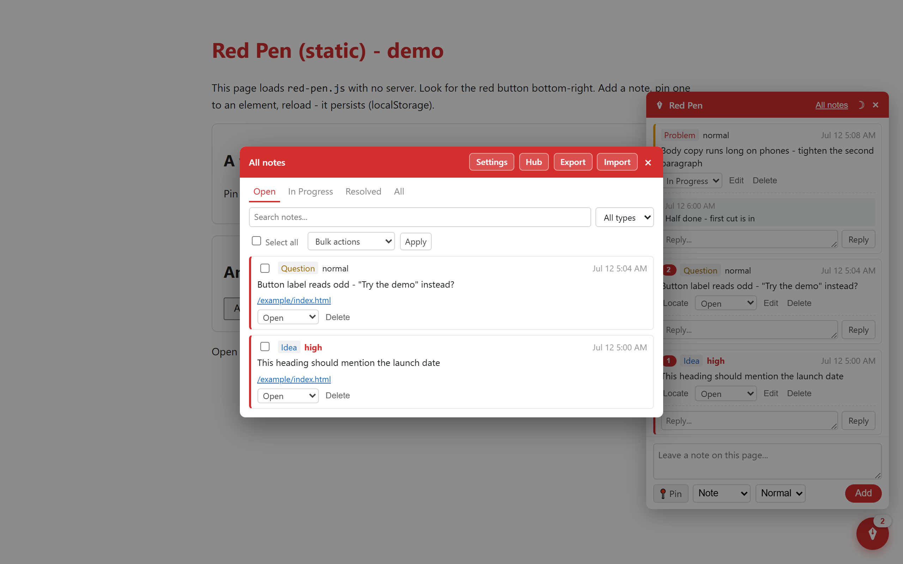
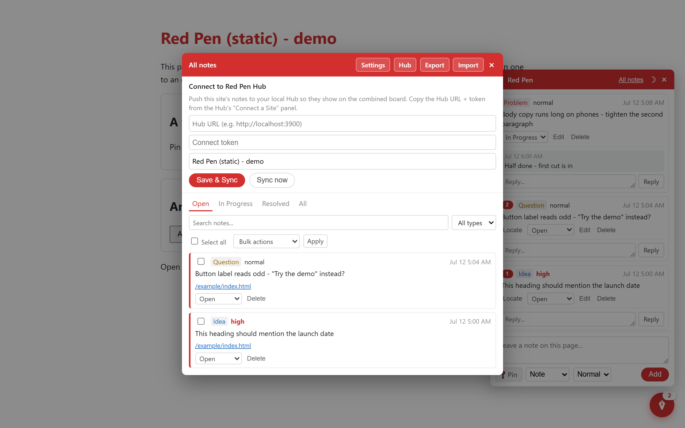

User manual - review notes for any site that renders in a browser. One script tag, no backend, no build.
Add one script tag to any HTML page - a Jekyll blog, an Astro site, a React app, a hand-written homepage from 2009 - and it gets the Red Pen overlay: a red button, a notes panel, numbered pins on elements. Notes are stored in the browser's own storage for that site. No server, no account, no build step.
<script src="red-pen.js"></script>Place it at the end of <body>. That's the entire setup - it works from a local file, a dev server, or a live site. All configuration happens in the overlay itself.

Click the red button to open the panel. Type the note, pick a type (Note, Idea, Problem, Question) and priority, and Add - or Ctrl+Enter. Pin lets you click the element the note is about; pins are numbered, amber while a note is in progress, and the J key jumps between them. Each note carries status (Open, In Progress, Resolved), replies, Locate, and edit.
Pins re-resolve when the page changes, not only when you scroll or resize, so a route change in a single-page app or a lazy-loaded section no longer leaves every pin frozen at a stale coordinate.

All notes in the panel header opens the cross-page board: every note on the site, status tabs, search and type filters, bulk actions (resolve, reopen, delete several at once), and page links that navigate to where each note lives.

The board's header also holds Settings (custom note types, custom pin color, and Your name), the dark-mode toggle, and Export / Import.
There are no accounts here, so you set a display name once - Settings on the All-notes board - and this browser stamps it on every note and reply it writes from then on. It is blank until you set it and never guessed at, so a note with no name is simply a note written before anyone set one. The point is a second person: hand the site to a colleague, both of you set a name, and the panel says who wrote what.
Below 600px the panel becomes a bottom sheet - full width, anchored to the bottom edge, and clear of the iOS home indicator - and the All-notes board becomes a sheet too. Tap targets grow, and every input is floored at 16px so iOS stops zooming the page when a field takes focus.
Pinning works by touch: a tap pins, a drag scrolls. The page pans normally while pin mode is on, and a touch only counts as a pin if your finger barely moved. There is no Esc key on a phone, so the on-screen hint doubles as the cancel target.
If the element a note was pinned to stops resolving, the note is not hidden. A bar at the top of the panel counts how many notes have lost their pin, the notes themselves are flagged, and Show them filters the list down to exactly those. Nothing is deleted: a selector can stop resolving because the element was removed, or because this render has not produced it yet.
localStorage has a size limit, and a page with a lot of notes can reach it. If a write does not fit, Red Pen says so and offers Export rather than swallowing the failure - the note you typed and the pin you placed are left where they are, so nothing is lost while you export and clear some room.
If you run the free Red Pen Hub, the Hub button on the All-notes board takes a Hub URL, connect token, and project name. Save and the site's notes push to your Hub board and pull status changes back - resolve on either side and the other follows. This also rescues notes out of browser storage into something permanent.

| Symptom | Likely cause and fix |
|---|---|
| No red button | The script tag isn't on this page, or it sits before <body> content exists. Put it at the end of body. |
| Notes disappeared | Browser site data was cleared, or you're in a different browser/profile. Restore from your last export - and export more often. |
| A pin doesn't show | The element it was anchored to no longer exists on the page. The note is still in the panel and on the board. |
| Notes don't follow me across pages | They do - per site. The panel shows the current page's notes; the All-notes board shows everything. |